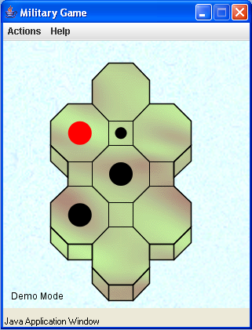

Introducción a Enterprise Java Beans 3.0
Un ejemplo sencillo de EJB 3.0
Veamos un ejemplo de declaración y uso de un EJB 3.0, el típico "Hola, mundo".
La interfaz SaludoRemote define el método saluda que devuelve un String. La anotación @Remote la declara como una interfaz remota de un enterprise bean:
@Remote
public interface SaludoRemote {
public String saluda();
}
La interfaz local se define con la anotación @Local:
@Local
public interface SaludoLocal {
public String saluda();
}
Un enterprise bean sin estado se define como una clase que implementa esas interfaces y que tiene la anotación @Stateless:
@Stateless
public class SaludoBean implements SaludoLocal, SaludoRemote {
public SaludoBean() {
}
public String saluda() {
return "Hola, mundo";
}
}
En EJB 3.0 no es necesario definir el objeto Home, sino que se obtiene directamente un objeto que implementa la interfaz que se desee (local o remota). Este objeto se puede obtener utilizando la "inyección de dependencias" (dependency injection) proporcionada por la anotación @EJB. Un ejemplo con un servlet:
public class Saluda extends HttpServlet {
@EJB
private SaludoLocal saludo;
protected void processRequest(HttpServletRequest request,
HttpServletResponse response)
throws ServletException, IOException {
response.setContentType("text/html;charset=UTF-8");
PrintWriter out = response.getWriter();
out.println("<html>");
out.println("<head>");
out.println("<title>Servlet Saluda</title>");
out.println("</head>");
out.println("<body>");
out.println("<h1>Saludo</h1>");
out.println("<p>");
out.println(saludo.saluda());
out.println("</p>");
out.println("</body>");
out.println("</html>");
out.close();
}
...
}
Entre las características introducidas por la especificación 3.0 podemos destacar:
- Desaparece el objeto Home que hacía de factoría de los enterprise beans. Recordad que este objeto era el que usaban los clientes de los enterprise beans para crear el enterprise bean que implementa la interfaz de negocio.
- Los enterprise beans se declaran objetos POJO que implementan interfaces remotas y locales.
- Anotaciones: en el bean de sesion (@Stateless), en la interfaz remota (@Remote) y en la interfaz local (@Local)
- Inyección de recursos: anotación @EJB
En esta sesión vamos a realizar una introducción a EJB 3.0 utilizando el entorno de programación Netbeans y el servidor de aplicaciones Sun Application Server.
Instalación de Netbeans y Sun Application Server
Vamos a utilizar la versión más reciente (a fecha actual, mayo de 2007) del entorno de desarrolo Netbeans y del servidor de aplicaciones Sun Application Server. Se encuentran disponibles en un único paquete (el Java EE Tools Bundle Update 3) en la página de Sun de Java EE Downloads. Hay versiones para Windows, Linux y Mac OS X.
El nombre del ejecutable que realiza la instalación es:
java-tools-bundle-u3-preview-windows.exe
Entre los programas que se instalan en este paquete se encuentran:
- NetBeans IDE 5.5.1 Beta
- NetBeans Enterprise Pack 5.5.1 Beta
- Sun Java System Application Server 9.1 Beta
Realiza la instalación del paquete, dejando los valores por defecto que propone. El usuario administrador del servidor de aplicaciones y su contraseña es "admin" y "adminadmin".
El asistente instala NetBeans y el servidor de aplicaciones en los directorios (Windows):
C:\Archivos de Programa\netbeans-5.5.1beta C:\Sun\SDK
Una vez terminada la instalación se arranca automática el entorno de programación NetBeans:
Una diferencia importante entre NetBeans y Eclipse es que NetBeans no maneja el concepto de "Perspectiva" para agrupar distintas "Vistas". En NetBeans sólo hay ventanas (equivalentes a la "vistas" de Eclipse) que el programador puede abrir, minimizar y modificar el tamaño y posición.
1. Prueba a abrir, cerrar, minimizar y cambiar de posición distintas ventanas del entorno.
Si seleccionas la pestaña "Runtime" Puedes comprobar que ya se encuentran instaladas distintas herramientas, como por ejemplo:
- Servidor Web Tomcat 5.5.17
- Servidor de aplicaciones Sun Application Server 9
- Gestor de bases de datos Apache Derby
Puedes acceder a opciones generales relacionadas con las herramientas en el menú "Tools". Puedes realizar acciones con cada una de las herramientas pulsando con el botón derecho sobre ellas.
2. Lanza el servidor de aplicaciones, pulsando con el botón derecho y seleccionando la opción "Start". Verás que se abre el panel "Output" en la parte inferior de la ventana, con los mensajes del servidor de aplicaciones. En ese panel se colocarán distintas pestañas con la salida de distintas consolas:
En el caso de la consola del servidor de aplicaciones puedes ver en el borde izquierdo una columna de iconos que permiten arrancar, parar, reiniciar o refrescar el servidor.
3. Para terminar este vistazo rápido por las herramientas instaladas, lanza la consola de administración del servidor de aplicaciones. Pulsa con el botón derecho y escoge la opción "View Admin Console".
Se abrirá un navegador que se conectará a la dirección "localhost:4848" (el puerto del servidor de aplicaciones). Introduce el usuario "admin" y la contraseña "adminadmin" para entrar en la consola de administración:
Verás que tiene opciones muy similares a las que ya conoces del BEA Weblogic. Se puede:
- Desplegar distintos tipos de aplicaciones
- Configurar recursos como JDBC, JMS, JMI
- Configurar aspectos del servidor relacionados con la seguridad, las transacciones, etc (en el apartado "Configuration")
El primer proyecto con EJB 3.0
Vamos a implementar un primer proyecto con EJB 3.0, el mismo que implementamos en la sesión 2. Se trata de un enterprise bean Saludo con dos métodos de negocio: saluda() que devuelve un saludo aleatorio y getSaludo(int numDatos) que devuelve un SaludoTO que contiene un array de enteros.
1. Selecciona en NetBeans el panel "Projects" y pulsa el botón derecho sobre él. Pulsa la opción "New Project" y escoge un proyecto de tipo "Enterprise Application" (un EAR). Pulsa "Enterprise > Enterprise Application > Next". Activa la opción "Create Application Client Module". Escribe como nombre de proyecto: "ejb30-saludo":
Puedes ver que el directorio en el que va a crear el proyecto es "C:\Documents and Settings\USUARIO\ejb30-saludo". Pulsa "Finish" para terminar.
Verás que se crean cuatro proyectos en el panel "Projects":
- ejb30-saludo: proyecto EAR que contiene al resto.
- ejb30-saludo-app-client: aplicación cliente
- ejb30-saludo-ejb: proyecto EJB
- ejb30-saludo-war: proyecto web
En el sistema de ficheros se ha creado la carpeta ejb30-saludo que contiene los otros proyectos. Puedes ver la estructura de ficheros que crea NetBeans escogiendo la pestaña "Files". Verás que en todos los directorios de proyectos hay ficheros build.xml debido a que NetBeans se basa por completo en Ant. Esta es una característica destacable de NetBeans: todas las dependencias entre proyectos y configuraciones del buildpath actualizan los ficheros build.xml que sirven para compilar y desplegar los proyectos.
2. Vamos a crear el enterprise bean Saludo. Pulsa con el botón derecho en el proyecto "ejb30-saludo-ejb" y escoge la opción "New > Session Bean". Escribe como nombre Saludo, como nombre de paquete ejb.beans, escoge la opción Stateless (está seleccionada por defecto) y activa ambos tipos de interfaz, remota y local:
3. Implementa la clase ejb.beans.SaludoTO:
package ejb.beans;
import java.io.Serializable;
import java.util.ArrayList;
import java.util.Date;
import java.util.List;
public class SaludoTO implements Serializable {
String mensaje = null;
Date fecha = null;
List<Integer> datos = null;
public SaludoTO() {
this.mensaje = "";
this.fecha = new Date();
this.datos = new ArrayList<Integer>();
}
public SaludoTO(String mensaje, Date fecha, List<Integer> datos) {
this.mensaje = mensaje;
this.fecha = fecha;
this.datos = datos;
}
public String getMensaje() {
return mensaje;
}
public Date getFecha() {
return fecha;
}
public List<Integer> getDatos() {
return datos;
}
}
4. Rellena el código de las interfaces remota y local:
@Remote
public interface SaludoRemote {
public String saluda();
public SaludoTO getSaludo(int numDatos);
}
@Local
public interface SaludoLocal {
public String saluda();
public SaludoTO getSaludo(int numDatos);
}
5. Rellena el código de la clase SaludoBean
@Stateless
public class SaludoBean implements SaludoLocal, SaludoRemote {
private String[] saludos = { "Hola, que tal?",
"Cuanto tiempo sin verte", "Que te cuentas?",
"Me alegro de volver a verte" };
public SaludoBean() {
}
public String saluda() {
int random = (int) (Math.random() * saludos.length);
return saludos[random];
}
public SaludoTO getSaludo(int numDatos) {
int random = (int) (Math.random() * saludos.length);
String saludo = saludos[random];
Date fecha = new Date();
ArrayList<Integer> datos = new ArrayList<Integer>();
for (int i=0;i<numDatos;i++){
datos.add(i);
}
SaludoTO miSaludo = new SaludoTO(saludo,fecha,datos);
return miSaludo;
}
}
5. Con esto has terminado de implementar el enterprise bean. Despliega el EAR, pulsando con el botón derecho sobre el proyecto y seleccionando la opción "Deploy Project".
Consulta en la consola de administración para comprobar que se ha realizado el despliegue:
Aplicación cliente
Vamos a implementar la aplicación cliente que se conecta de forma remota con el enterprise bean.
1. Implementa la clase ejb30saluda.Main del proyecto ejb30-saludo-app-client:
package ejb30saludo;
import ejb.beans.SaludoRemote;
import ejb.beans.SaludoTO;
import java.util.Date;
import java.util.List;
import javax.ejb.EJB;
public class Main {
@EJB
static SaludoRemote saludo;
public Main() {
}
public static void main(String[] args) {
System.out.println("Voy a llamar al bean");
System.out.println(saludo.saluda());
System.out.println("Ya he llamado al bean");
SaludoTO saludoTO = saludo.getSaludo(100);
System.out.println("Datos obtenidos:");
System.out.println("Mensaje: " + saludoTO.getMensaje());
System.out.println("Fecha creación enterprise bean: " + saludoTO.getFecha().toString());
List datos = saludoTO.getDatos();
System.out.println("Los datos tienen " + datos.size() + " elementos");
System.out.println("Fecha actual: " + (new Date()).toString());
}
}
Como puedes ver el enterprise bean se declara con una anotación, y después el entorno en el que se ejecutará la aplicación cliente inyectará en la declaración el objeto correspondencia.
Esto implica que la aplicación cliente no puede ejecutarse aislada, sino que necesita un entorno en el que funcionar (el contenedor de aplicaciones clientes o application client container).
2. Para probar la aplicación cliente debes desplegarla conjuntamente con el EAR. Prueba a desplegarla y ejecutarla de forma independidente pulsando el botón derecho y seleccionando "Deploy Project" y "Run Project". Obtendrás un error, porque no se habrá inyectado el bean.
3. Vamos a hacerlo correctamente. Primero elimina la aplicación cliente del servidor de aplicaciones. Selecciona la pestaña "Runtime" y examina los módulos desplegados en el servidor de aplicaciones:
Para eliminar el módulo del servidor de aplicaciones, pulsa el botón derecho y selecciona "Undeploy".
4. Vamos a indicar que el ejecutable del EAR es la aplicación cliente que acabamos de implementar. Para ello cambia al panel "Projects" y selecciona la opción "Properties > Run" del projecto principal EAR. Selecciona como módulo cliente al "ejb30-saludo-app-client" y escribe como clase principal ejb30saludo.Main:
5. Por último, pulsa con el botón derecho en el proyecto y selecciona la opción "Run Project". Ahora sí que funcionará correctamente.
6. Vamos a cambiar la aplicación cliente para introducir una interfaz Swing. Cambia su código por el que hay a continuación. Cuando NetBeans te ofrezca más de una opción a importar, selecciona el import con el paquete swing.
... imports...
public class Main extends JPanel {
@EJB
static SaludoRemote saludo;
protected JTextField tf;
protected JTextArea textArea;
public Main() {
JPanel entryPanel = new JPanel(new BorderLayout());
tf = new JTextField("", 20);
JButton botonEnter = new JButton("Enter");
botonEnter.addActionListener(new EnterListener());
entryPanel.add(tf,BorderLayout.LINE_START);
entryPanel.add(botonEnter,BorderLayout.CENTER);
setLayout(new BorderLayout());
textArea = new JTextArea(10,25);
textArea.setEditable(false);
JScrollPane scrollPane = new JScrollPane(textArea,
JScrollPane.VERTICAL_SCROLLBAR_ALWAYS,
JScrollPane.HORIZONTAL_SCROLLBAR_ALWAYS);
add(entryPanel,BorderLayout.PAGE_START);
add(scrollPane,BorderLayout.LINE_START);
}
public static void main(String[] args) {
try {
JFrame frame = new JFrame("Cliente remoto");
frame.setDefaultCloseOperation(JFrame.EXIT_ON_CLOSE);
frame.setContentPane(new Main());
frame.setSize(300, 390);
frame.setLocation(400,100);
frame.setResizable(false);
frame.setVisible(true);
} catch (Exception ex) {
System.err.println("Caught an unexpected exception!");
ex.printStackTrace();
System.exit(1);
}
}
class EnterListener implements ActionListener {
public void actionPerformed(ActionEvent e) {
try {
String texto = tf.getText();
tf.setText("");
if (texto.equals("")) {
textArea.append(saludo.saluda()+"\n");
} else {
SaludoTO saludoTO =
saludo.getSaludo(Integer.parseInt(texto));
textArea.append(saludoTO.getMensaje()+"\n");
textArea.append(saludoTO.getFecha().toString()+"\n");
int numDatos = saludoTO.getDatos().size();
textArea.append(Integer.toString(numDatos)+"\n");
}
} catch (Exception ex) {
textArea.append("Caught an unexpected exception!\n");
textArea.append(ex.toString());
}
}
}
7. Vuelve a seleccionar la opción "Run Project" del paquete principal y verás que la aplicación cliente tiene ahora interfaz gráfica:
Prueba la aplicación cliente.
Java Web Start
Seguro que te habrás preguntado cómo utilizar la aplicación cliente en un cliente remoto, independientemente del servidor de aplicaciones. La respuesta está en la utilidad Java Web Start, con la que vamos a descargarnos la aplicación cliente y el contenedor de aplicaciones clientes.
Java Web Start es una aplicación que permite gestionar el despliegue y la actualización de aplicaciones de escritorio. Java Web Start se asegura de que la aplicación de escritorio corresponde con la última versión que reside en el servidor. En el caso de que la aplicación en el servidor fuera más reciente la descarga al cliente.
1. Conéctate a la página página de Sun con aplicaciones ejemplo y pincha en una de las aplicaciones, por ejemplo el "Military Game". El navegador te preguntará si quieres utilizar Java Web Start para lanzar ese programa. Di que sí, y que lo haga así el resto de veces.
Java Web Start se activará, se descargará el programa ("mg.jnlp") y lo lanzará:

Puedes configurar distintas opciones de aplicaciones descargadas con JWS y crear enlaces en el escritorio a estas aplicaciones. Lanza el programa (en "C:\Archivos de Programa\Java\jreVERSION\bin\javaws.exe") y examina las distintas opciones que aparecen.
Para crear un acceso directo a la aplicación, pulsa con el botón derecho en ella y selecciona "Instalar accesos directos". Esto crea un acceso directo en el escritorio.
Vamos a utilizar Java Web Start para descargar y lanzar aplicaciones nuestra aplicación cliente.
2. Abre la consola de administración del servidor de aplicaciones y selecciona la aplicación enterprise que hemos desplegado "ejb30-saludo". Verás que aparece una página con sus componentes y que junto al modulo de aplicación cliente aparece el enlace "Launch". Púlsalo y aparece la página de lanzamiento de la aplicación cliente:
3. Pulsa el botón "Launch" y verás que se pone en marcha JWS para descargar y lanzar la aplicación cliente que hemos desarrollado (junto con todos los JAR que implementan el contenedor de aplicaciones cliente):
4. Prueba por último a parar el servidor de aplicaciones y verás que la aplicación cliente deja de responder. Vuelve a poner en marcha el servidor de aplicacines para comprobar que vuelve a funcionar la aplicación cliente.
5. Prueba por último a hacer algún pequeño cambio en la aplicación cliente, desplegarlo y volver a arrancar la aplicación usando el enlace en el escritorio. Verás que JWS descarga detecta que hay una nueva versión, la descarga y la lanza de forma transparente al usuario.
Cliente web
Por último, vamos a desarrollar el cliente web que se comunica de forma local con el enterprise bean.
Un problema es que la inyección de dependencias no funciona con las etiquetas estándar de JSP (debido a que la especificación de JSP es previa a la última especificación de EJB). Sí que funciona con los backing beans de JSF y con los servlets. Vamos a usar un servlet.
1. Pulsa con el botón derecho en el proyecto war y selecciona "New > Servlet". Introduce el nombre "Saluda" y el paquete ejb.servlets:
2. Deja el siguiente formulario con las opciones por defecto, en las que se indica que se añadirá una entrada en el fichero "web.xml" con la información del servlet.
3. Incluye el siguiente código en el cuerpo del servlet, en el que se llama al interfaz SaludoLocal:
public class Saluda extends HttpServlet {
@EJB
private SaludoLocal saludo;
/** Processes requests for both HTTP <code>GET</code> and <code>POST</code> methods.
* @param request servlet request
* @param response servlet response
*/
protected void processRequest(HttpServletRequest request, HttpServletResponse response)
throws ServletException, IOException {
response.setContentType("text/html;charset=UTF-8");
PrintWriter out = response.getWriter();
out.println("<html>");
out.println("<head>");
out.println("<title>Servlet Saluda</title>");
out.println("</head>");
out.println("<body>");
out.println("<h1>Servlet Saluda at " + request.getContextPath() + "</h1>");
out.println("<p>");
if (saludo != null) {
out.println(saludo.saluda());
} else out.println("No hay saludo");
out.println("</p>");
out.println("</body>");
out.println("</html>");
out.close();
}
4. Despliega el proyecto EAR y abre una página en la URL:
http://localhost:8080/ejb30-saludo-war/Saluda